Full analytical report: EDA, model comparison, and log-transform analysis
The dataset contains daily sales records across 54 stores and 33 product families
in Ecuador spanning ~5 years (3,000,888 training rows, 28,512 test rows). Data comes from 6 CSV files:
train.csv, test.csv, stores.csv, oil.csv,
holidays_events.csv, and transactions.csv.
Features include calendar attributes (dayofweek, month, etc.), store metadata
(type, cluster), external signals (oil price, holidays), and time-series lag/rolling
features (shifted 16 days to prevent data leakage). Training uses the most recent 365 days
with the last 16 days held out for validation — matching the test horizon.
Only the oil table has missing values — dcoilwtico (oil price) is missing on
weekends and holidays when markets are closed. This is structural missingness, not random. All other tables
have complete data.
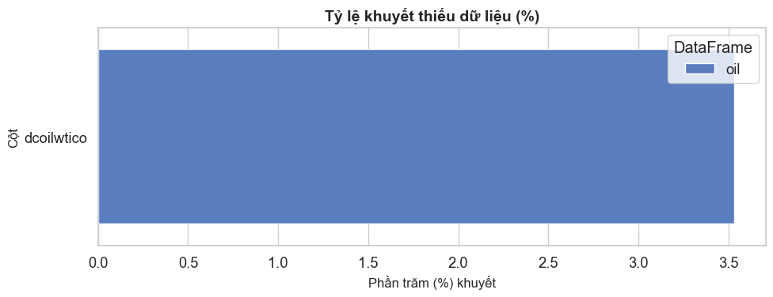
ffill().bfill()) for oil prices. Lag/rolling features filled with 0.Sales are heavily right-skewed with many zeros (~19% of rows). Applying log1p makes the
distribution approximately normal, confirming the choice of RMSLE and log-transformed training target.
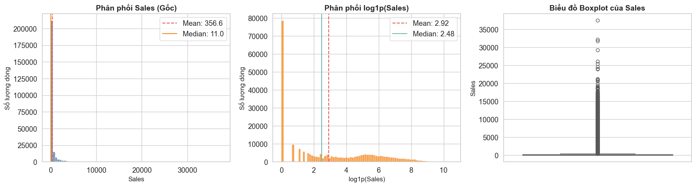
Grocery items dominate sales volume, while electronics and home appliances have lower but more variable sales. The category mix has remained stable year-over-year, suggesting a single global model is appropriate.
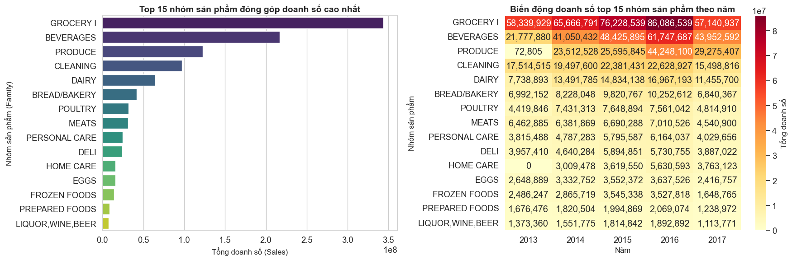
Sales show clear yearly seasonality (peaks in December) and weekly patterns (weekdays higher than weekends). A long-term upward trend reflects economic growth. The 16-day shift in lag features catches the weekly pattern while preventing look-ahead.
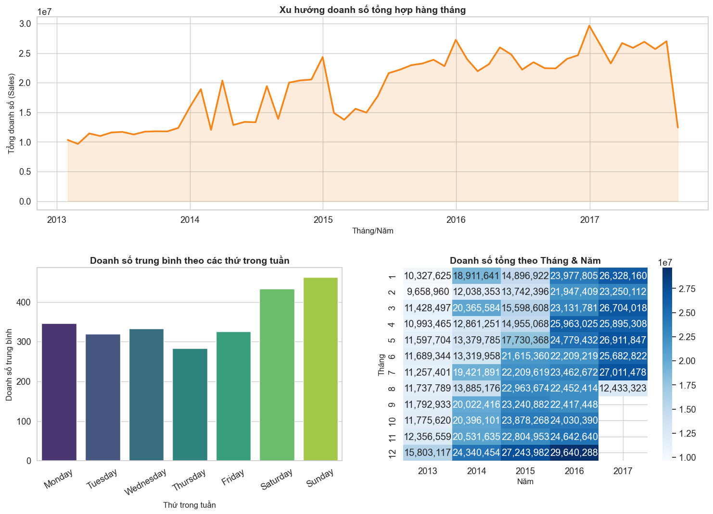
Promotions (onpromotion) have a clear positive effect on sales. Higher onpromotion values
correlate with higher sales, though the relationship is non-linear with diminishing returns.
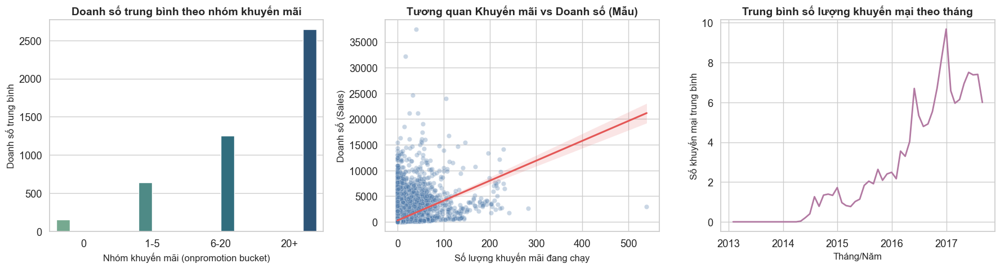
Store type correlates with sales volume. Type A stores (larger) have higher sales. Cluster grouping provides a more granular segmentation. These categorical features help capture store-level heterogeneity.
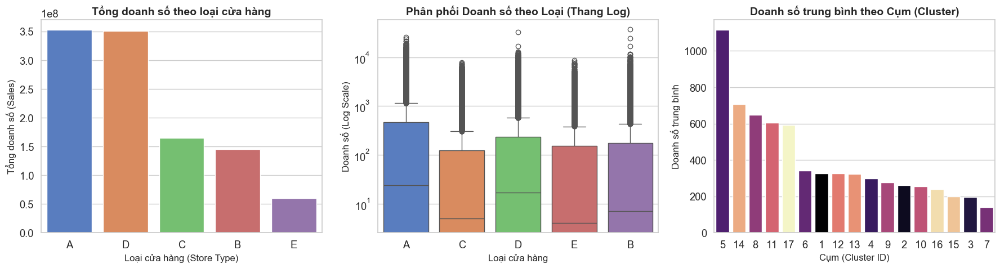
Ecuador is a major oil exporter. Oil prices affect national income and consumer spending. However, the correlation with sales is weak (|r| < 0.2), suggesting oil price adds limited predictive value at the daily level.
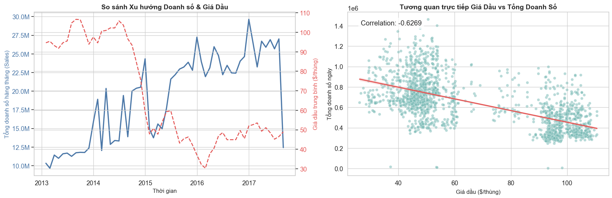
Holidays drive predictable sales spikes. Most holidays are national or local events. The
transferred flag indicates holidays moved to a different date, which we exclude from
the holiday indicator to avoid misleading the model.
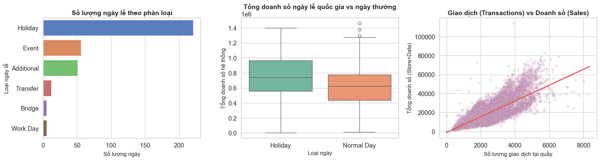
is_holiday and holiday_count are binary and count features.The correlation matrix reveals feature relationships. Lag features are highly correlated with the target (as expected). Calendar features show weak but useful signals. Oil price correlation is near zero.
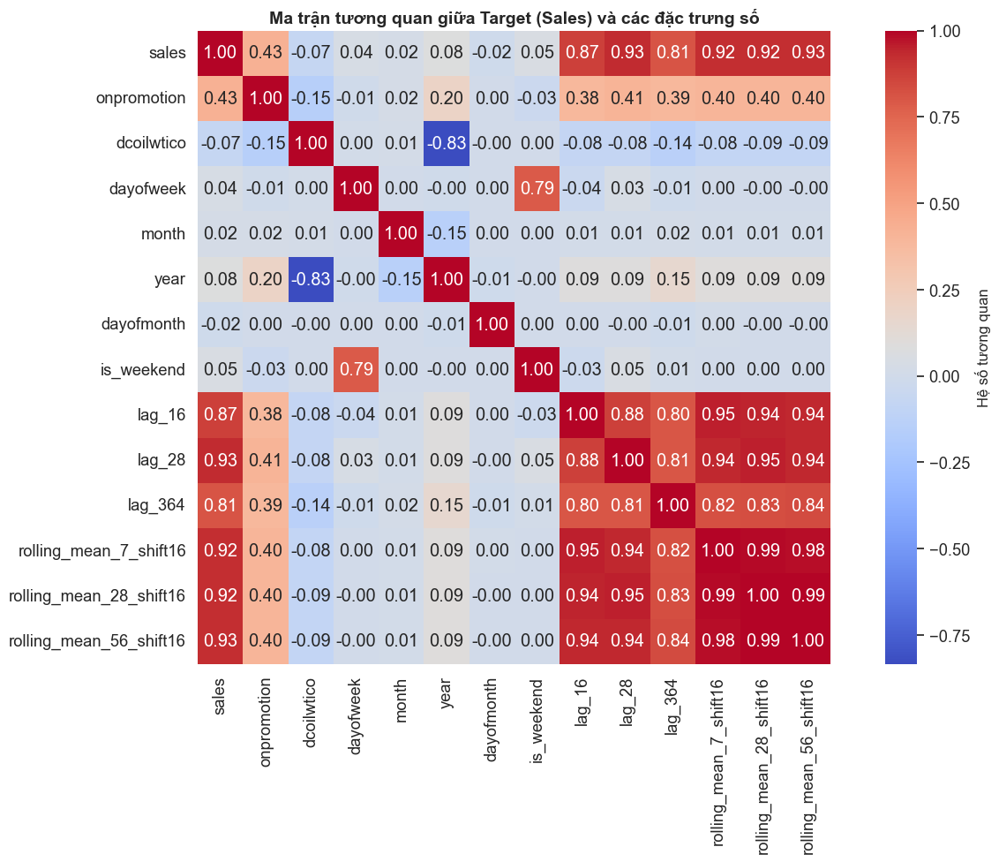
Six scratch models were trained (Ridge, MLP, HGB × no-log, log-features) plus four time-series baselines. HGB dominates regardless of feature transform. Log-transform dramatically improves Ridge and MLP.
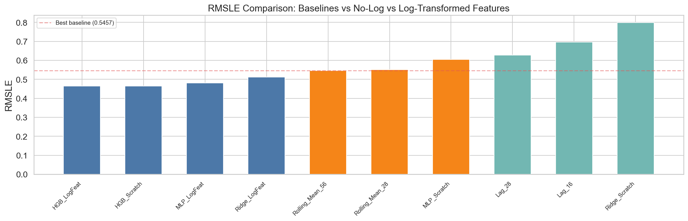
| Model | RMSLE | MAE | MSE | RMSE | R² |
|---|---|---|---|---|---|
| HGB_LogFeat | 0.4648 | 91.2 | 136,513.0 | 369.5 | 0.9124 |
| HGB_Scratch | 0.4648 | 91.2 | 136,513.0 | 369.5 | 0.9124 |
| MLP_LogFeat | 0.4805 | 93.6 | 90,686.0 | 301.1 | 0.9418 |
| Ridge_LogFeat | 0.5123 | 99.7 | 114,384.0 | 338.2 | 0.9266 |
| MLP_Scratch | 0.6042 | 126.3 | 395,022.0 | 628.5 | 0.7465 |
| Ridge_Scratch | 0.7986 | 218.3 | 1,867,041.0 | 1366.4 | -0.1980 |
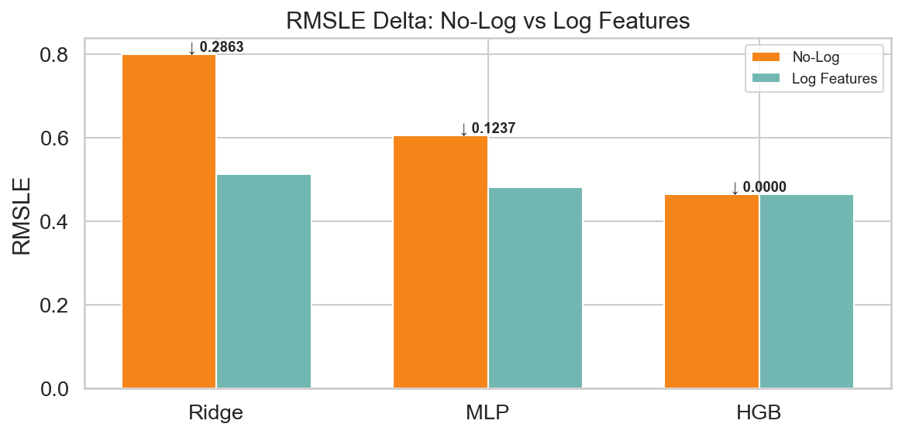
| Model | No-Log | Log Feat | Delta |
|---|---|---|---|
| Ridge | 0.7986 | 0.5123 | ↓ 0.2863 |
| MLP | 0.6042 | 0.4805 | ↓ 0.1237 |
| HGB | 0.4648 | 0.4648 | = 0.0000 |
Training and validation MSE loss curves confirm convergence behaviour. MLP with log features converges to a lower final loss. HGB validation loss stabilises well before 160 iterations with no overfitting.
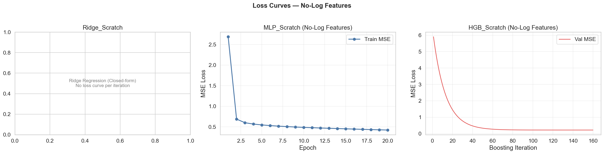
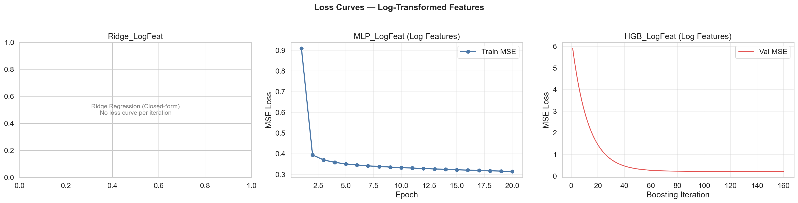
Diagnostic plots for the best model (HGB) show actual vs predicted alignment, residual distribution, error by time and store type, feature importance, and error by product family.
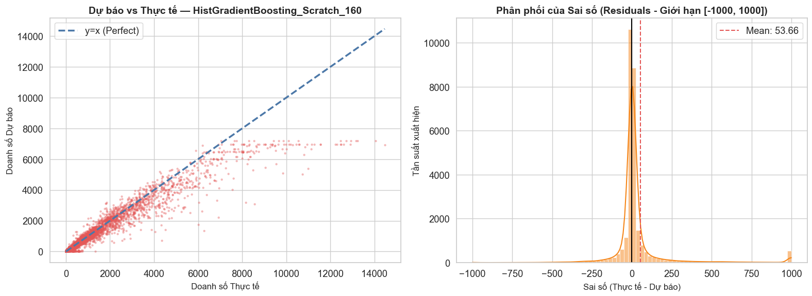
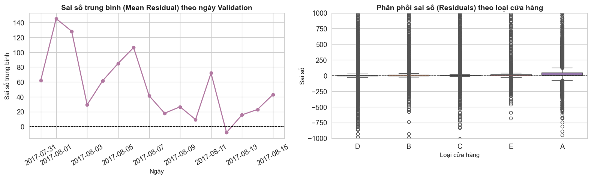
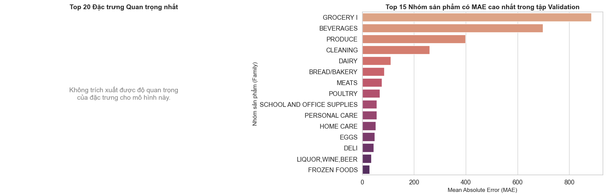
HistGradientBoosting is the best model (RMSLE = 0.4648), significantly outperforming baselines and linear models without requiring feature transforms. It is recommended as the production model.
Log-transforming skewed features is highly beneficial for linear models (Ridge −35.8%, MLP −20.5% RMSLE). This is a zero-cost improvement at inference time and should be applied whenever linear or neural models are used.
EDA insights validate the modelling decisions: log transform for the target, 16-day shift for lag features, and a single global model rather than per-family models (though top families could benefit from custom models).